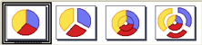

Hojas de cálculo
5.4.2. Gráficos Circulares
Importante
Los gráficos circulares se utilizan para representar proporciones de datos de una serie. Cuando lo que queremos representar son varias series se utiliza una opción de este tipo de gráficos que son los gráficos de anillo.
Junto con los anteriores, es el tipo de gráfico más utilizado. La representación de datos según su proporción es un método muy práctico para realizar análisis de los datos.
También permite elegir entre dos opciones que son el círculo (o anillo) normal y el esparcido.

Ejercicio resuelto
Aprovecha los datos del apartado anterior y realiza dos gráficos:
- Uno de círculo con la serie que forman los valores de la columna "mensajes".
- Uno de anillo con dos series de valores formados por las columnas "llamadas recibidas" y "llamadas enviadas".
Obra publicada con Licencia Creative Commons Reconocimiento No comercial Compartir igual 4.0